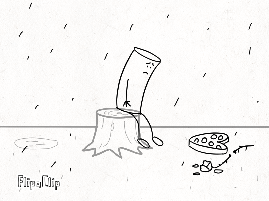

Staging
Staging sets the place, time, and order to where a scene takes place. If a character does something, it’s good to give context of where it is taking place, or in what order will it do things, or what things around it will do once he finishes or prepares for something. It’s always important to not overlap a sequence of how things happen and make sure the scenery relates to the situation.

In this scene, we can see a guy who is sad. Why is it sad? Well there is a rose and a box of chocolates lying on the floor. We can assume he was rejected on a date and feels down because of it. We can see the character is holding a sad face and gets even sadder in the second half of the scene. The rain gives a more of a feeling of sadness to the character and the viewer can understand the whole scene is a very sad one.
Click image to see video. In this extract from the short film "Paperman" from 2012, we can see a person waiting at the train station, a wagon passes by, blows some papers at him, and then a woman enters the scene while they both wait together. The scenery and order of things let the viewer understand that it is a busy environment. It is important that the actions occur in order or else the viewer won't process it correctly, causing confusion.